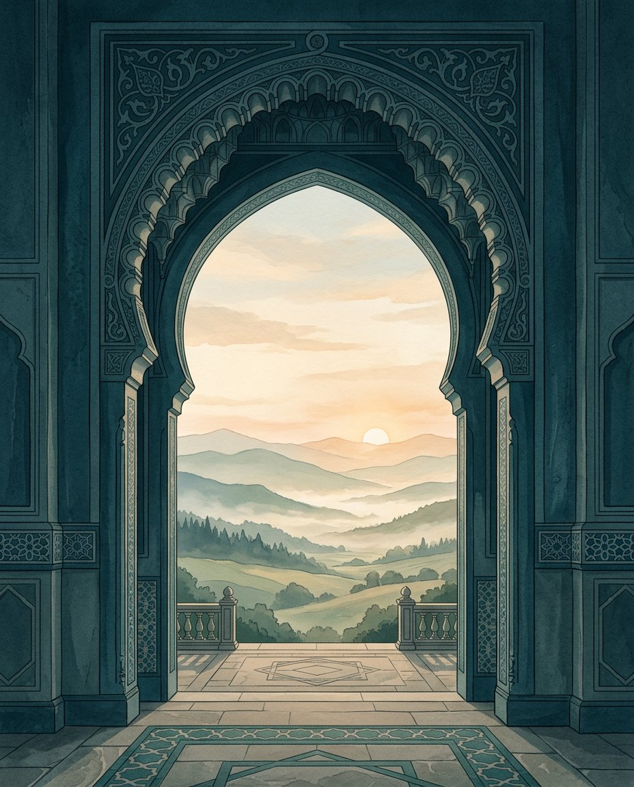

Gather in faith
Join us for worship, reflection, and religious programs throughout the year.
See our programsWelcome to the Jaffery Center of Roanoke — a community rooted in faith, learning, and the joy of coming together. Anyone is welcome here.

Whether you’re new to Roanoke, looking for a place for your children to learn, or hoping to reconnect with your faith, we’re glad you found us.
Join us for worship, reflection, and religious programs throughout the year.
See our programsOur Sunday School helps children grow in Qur’an learning, Arabic, and Islamic values.
Explore Sunday SchoolMeet neighbors, build friendships, and find a welcoming community here in Roanoke.
Come visit usWe’ll post dates, times, and speakers here when they’re confirmed.
There are no confirmed events to list right now. For current program updates and gatherings, request access to the community announcements.
The Jaffery Center of Roanoke brings people together through Islamic education, religious programs, and family-centered gatherings. Everyone is welcome — lifelong members, newcomers, and anyone seeking connection.
“And hold firmly to the rope of Allah all together and do not become divided.”Qur’an 3:103Get to know us
Find our address, get directions, and stop by when we gather.